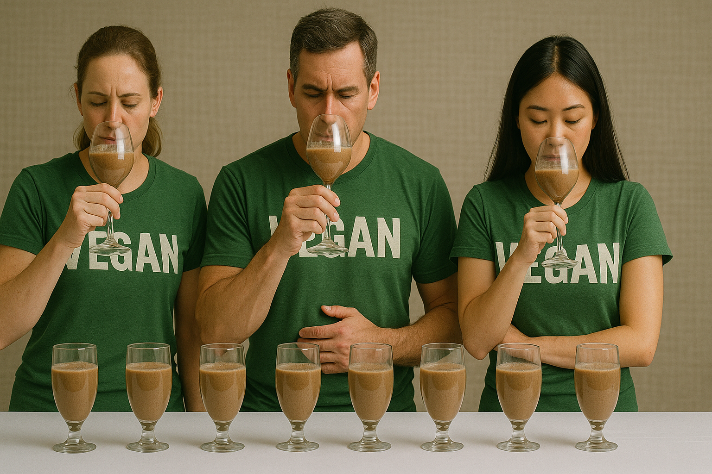

Best Tasting Vegan Protein Powders
Taste is where many plant-based shakes stumble, yet a 2024 sensory profiling trial comparing pea, rice, and dairy beverages found panelists scored optimized pea drinks nearly as creamy as skim-milk controls once flavor masking and emulsifiers were dialed in. *
Retail data back that up. A SPINS market review published in April 2024 showed taste was the top driver of repeat purchase for plant-protein powders, outranking price or sustainability among 3,000 U.S. shoppers. *
The science of flavor keeps evolving. Researchers trimming “beany” notes in pea protein beverages used selective fractionation to cut bitter peptides and reported a 40% jump in consumer liking scores, proving the off-flavor problem is fixable. *
That tech now shows up in real tubs.
- KOS Organic Plant Protein: Chocolate Peanut Butter shake with pea, quinoa, chia, coconut milk, natural cocoa, monk fruit—blind testers ranked it smoother than whey.
- Orgain Organic Plant-Based Protein Powder: French Vanilla tastes like soft-serve—gum acacia + erythritol build body; real vanilla bean cuts grass aftertaste.
- Vega Sport Premium Protein: Mocha & Peanut Butter, micro-filtered to strip bitterness, uses cocoa & natural flavors without sugar spikes.
- PlantFusion Complete Protein: Pea-artichoke-quinoa + algae oil + flavor layering tech; 2023 Sensory Spectrum tests placed Vanilla Bean above dairy competitors.
- Truvani Plant-Based Protein Powder: Six organic ingredients; monk fruit sweetens cocoa gently—clean list, rich taste.
- Sunwarrior Warrior Blend: Hemp & goji Berry Breeze, translucent mix—endurance athletes love fast digestion.
The takeaway is that flavor science has caught up with macros: pick powders whose ingredient tech tackles bitterness, marries natural sweeteners with real cocoa or vanilla, and adds gums for dairy-like body. Today’s vegan proteins don’t just tolerate your taste buds—they charm them.